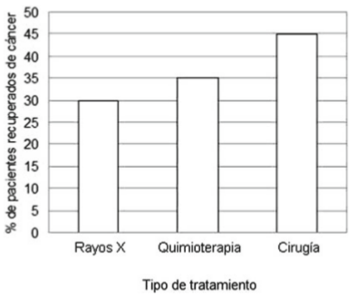
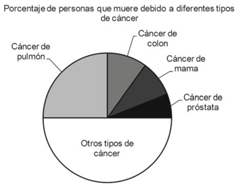
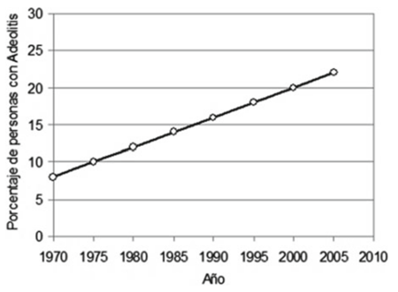
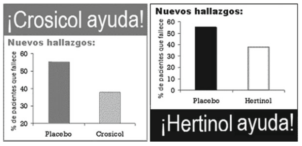
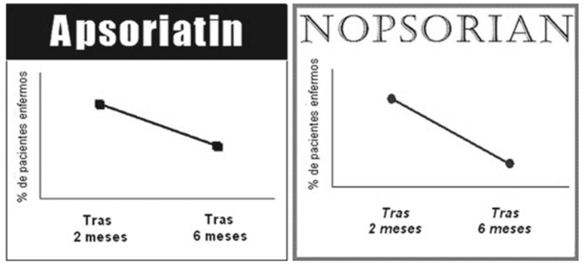
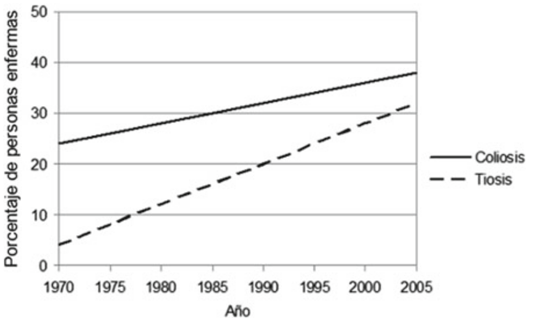
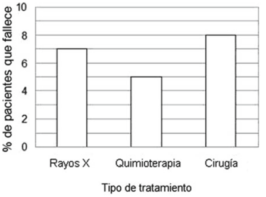

<!doctype html>
<html>
    <head>
        <title>Experimento Graph Literacy V2</title>
        <!-- INICIO llamadas de JS, JQuery y CSS -->

        <!--
        Notas:
        * Este template asume que el archivo HTML a ejecutar, se encuentra en el mismo directorio que las
        carpetas de JsPsych, de imagenes y otros recursos a utilizar. Si se desea emplear otra estructura para
        ordenar las carpetas, se deben realizar los cambios respectivos en las llamadas a dichos recursos.
        * Si bien se listan todos los plugins empleados en la bateria completa, cuando se quiere ejecutar un modulo
        en particular, no es necesario que esten todas, para lo cual basta con dejar las que se requieren y borrar
        el resto.
        * Dado que la distribucion de elementos e imagenes en pantallas esta fijada para resoluciones de 1920x1080,
        hay elementos que se veran de forma erronea en otras resoluciones. Para corregir esto, se deben editar los
        valores respectivos en el archivo style.css
        * Para cumplir los requerimientos de cada prueba, los archivos javascript de varios plugin fueron
        modificados de distinta forma, por lo tanto, se recomienda emplear la carpeta que contiene los plugins
        modificados. En caso contrario, los experimentos pueden no comportarse de la forma esperada, o
        bien, simplemente no funcionar.
        -->

        <!-- JQuery -->
        <script src="https://ajax.googleapis.com/ajax/libs/jquery/1.11.1/jquery.min.js"></script>
        <!-- Libreria principal JsPsych -->
        <script src="jsPsych-6/jspsych.js"></script>

        <!-- Plugin para recibir texto estilo survey -->
        <script src="jsPsych-6/plugins/jspsych-survey-text.js"></script>
        <script src="jsPsych-6/plugins/jspsych-survey-textglpercent.js"></script>
        <script src="jsPsych-6/plugins/jspsych-survey-textglman.js"></script>
        <!-- Plugin custom multi choice 3 -->
        <script src="jsPsych-6/plugins/jspsych-survey-multi-choice3.js"></script>
        <!-- Plugin para desplegar elementos tipo instrucciones -->
        <script src="jsPsych-6/plugins/jspsych-instructions.js"></script>

        <!-- Documento CSS principal -->
        <link rel="stylesheet" type="text/css" href="style.css">

        <!-- Libreria para alertas customizadas + CSS respectivo -->
        <script src="dist/sweetalert.min.js"></script>
        <link rel="stylesheet" type="text/css" href="dist/sweetalert.css">

        <!-- FIN llamadas de JS, JQuery y CSS -->
    </head>
    <body>
        <script>

            // Funciones de apoyo
            function block_fkeys(event){
                var x = event.which || event.keyCode;
                if(x == 112 || x == 113 || x == 114 || x == 115 || x == 116 || x == 117 || x == 118 || x == 119 || x == 120 || x == 121 || x == 122 || x == 123 ){
                    console.log("Blocked key");
                    event.preventDefault();
                    return false;
                }else{
                    return;
                }
            }

            // Inicio prueba
            var graphexplanation={
                type: "instructions",
                pages: ["<div class = centerbox>"+
                       "<p class = center-block-text>"+
                       "A continuaci&oacute;n deber&aacute;s responder 13 preguntas sobre una serie de gr&aacute;ficos que ser&aacute;n presentados.<br /><br />"+
                       "Debes leer atentamente cada pregunta y responder la informaci&oacute;n que se solicita de cada gr&aacute;fico.<br /><br />"+
                       "</p></div>"],
                allow_keys: false,
                show_clickable_nav: true,
                timing_post_trial: 50,
                data:{trialid: "Instructions_GraphLiteracy"}
            };

            var graph_literacy1_a = {
                type: "survey-textglpercent",
                //Importante: los ID asignados a la pregunta 8A y 8B fueron cambiados por 8 y 9 para respetar el orden numerico y optimizar su identificacion en los analisis. Esto implica que el resto de las preguntas posteriores estan sumadas 1 numero. Por ejemplo, la pregunta 10 antes era la 9
                timeline: [
                    /*Pregunta normal*/
                    {preamble: "<p>A continuaci&oacute;n, le presentamos informaci&oacute;n sobre varios tratamientos para el c&aacute;ncer.</p><br /><div class='centered'></div>",
                    questions: [{prompt:"<p>&iquest;Qu&eacute; porcentaje de pacientes se han recuperado tras recibir quimioterapia?</p>"}], data:{trialid: "GL_01_a"}}
                ],
                rows: [1],
                columns: [5],
                horizontal: true
            };

            var graph_literacy1_b = {
                type: "survey-text",
                //Importante: los ID asignados a la pregunta 8A y 8B fueron cambiados por 8 y 9 para respetar el orden numerico y optimizar su identificacion en los analisis. Esto implica que el resto de las preguntas posteriores estan sumadas 1 numero. Por ejemplo, la pregunta 10 antes era la 9
                timeline: [
                    /*Pregunta normal*/
                    {preamble: "<p>A continuaci&oacute;n, le presentamos informaci&oacute;n sobre varios tratamientos para el c&aacute;ncer.</p><br /><div class='centered'></div>",
                    questions: [{prompt:"<p>&iquest;Qu&eacute; diferencia hay entre el porcentaje de pacientes que se ha recuperado<br /> tras recibir cirug&iacute;a y el porcentaje de paciente de pacientes que se ha recuperado<br /> tras recibir rayos X?</p>"}], data:{trialid: "GL_01_b"}},
                ],
                rows: [1],
                columns: [5],
                horizontal: true
            };

            var graph_literacy2_a= {
                type: "survey-textglpercent",
                //Importante: los ID asignados a la pregunta 8A y 8B fueron cambiados por 8 y 9 para respetar el orden numerico y optimizar su identificacion en los analisis. Esto implica que el resto de las preguntas posteriores estan sumadas 1 numero. Por ejemplo, la pregunta 10 antes era la 9
                timeline: [
                    /*Pregunta normal*/
                    {preamble: "<p>A continuaci&oacute;n, le presentamos informaci&oacute;n sobre varios tipos de c&aacute;ncer.</p><br /><div class='centered'></div>",
                    questions: [{prompt:"<p>De entre todas las personas que mueren de c&aacute;ncer, aproximadamente<br /> &iquest;qu&eacute; porcentaje muere de c&aacute;ncer de pulm&oacute;n?</p>"}], data:{trialid: "GL_02_a"}}
                ],
                rows: [1],
                columns: [5],
                horizontal: true
            };

            var graph_literacy2_b= {
                type: "survey-textglpercent",
                //Importante: los ID asignados a la pregunta 8A y 8B fueron cambiados por 8 y 9 para respetar el orden numerico y optimizar su identificacion en los analisis. Esto implica que el resto de las preguntas posteriores estan sumadas 1 numero. Por ejemplo, la pregunta 10 antes era la 9
                timeline: [
                    /*Pregunta normal*/
                    {preamble: "<p>A continuaci&oacute;n, le presentamos informaci&oacute;n sobre varios tipos de c&aacute;ncer.</p><br /><div class='centered'></div>",
                    questions: [{prompt:"<p>Aproximadamente, &iquest;qu&eacute; porcentaje de personas que muere por c&aacute;ncer,<br /> fallece por c&aacute;ncer de colon, c&aacute;ncer de mama, y c&aacute;ncer de pr&oacute;stata en conjunto? </p>"}], data:{trialid: "GL_02_b"}}
                ],
                rows: [1],
                columns: [5],
                horizontal: true
            };

            var gl_alt1_1={
                type: "survey-textglpercent",
                timeline:[
                    {
                       preamble: "<p>A continuaci&oacute;n, le presentamos informaci&oacute;n sobre un trastorno llamado Adeolitis.</p><br /><div class='centered'></div>",
                       questions: [{prompt:"<p>Aproximadamente, &iquest;qu&eacute; porcentaje de personas sufri&oacute; Adeolitis en el a&ntilde;o 2000?</p>"}], data:{trialid: "GL_03_01"}
                        },
                ],
            };

            var gl_alt1_2={
                type: "survey-multi-choice3",
                timeline:[
                    {
                       preamble: "<p>A continuaci&oacute;n, le presentamos informaci&oacute;n sobre un trastorno llamado Adeolitis.</p><br /><div class='centered'></div>",
                       questions: [{prompt:"<p>&iquest;Cu&aacute;ndo se produjo un incremento mayor en el porcentaje de personas que sufre Adeolitis?",
                       options: ["Entre 1975 y 1980","Entre 2000 y 2005","El incremento es igual en ambos intervalos","No lo s&eacute;"]}], data:{trialid: "GL_03_02"}
                        },
                ],
            };

            var gl_alt1_3={
                type: "survey-text",
                timeline:[
                    {
                       preamble: "<p>A continuaci&oacute;n, le presentamos informaci&oacute;n sobre un trastorno llamado Adeolitis.</p><br /><div class='centered'></div>",
                       questions: [{prompt:"<p>Haga una estimaci&oacute;n: &iquest;qu&eacute; porcentaje de personas sufrir&aacute; Adeolitis en el a&ntilde;o 2010?</p>"}], data:{trialid: "GL_03_03"}
                        },
                ],
            };

            var graph_literacy3_a={
                type: "survey-text",
                preamble: "<p>En la figura que aparece a continuaci&oacute;n, se representa mediante c&iacute;rculos el n&uacute;mero <br />de hombres y mujeres en un grupo de pacientes que padecen el trastorno X. <br />El n&uacute;mero total de c&iacute;rculos es 100.</p><br /><div class='centered'></div>",
                questions: [{prompt:"<p>De entre los 100 pacientes con el trastorno X, &iquest;cu&aacute;ntos son mujeres?</p>"}], data:{trialid: "GL_04_a"}
            };

            var graph_literacy3_b={
                type: "survey-textglman",
                preamble: "<p>En la figura que aparece a continuaci&oacute;n, se representa mediante c&iacute;rculos el n&uacute;mero <br />de hombres y mujeres en un grupo de pacientes que padecen el trastorno X. <br />El n&uacute;mero total de c&iacute;rculos es 100.</p><br /><div class='centered'></div>",
                questions: [{prompt:"<p>&iquest;Cu&aacute;ntos m&aacute;s hombres que mujeres hay entre los 100 pacientes que padecen <br />el trastorno X?</p>"}], data:{trialid: "GL_04_b"}
            };

            var gl_alt2_1_1={
                type: "survey-multi-choice3",
                timeline:[
                        {preamble: "<p>Imagine que ve los siguientes anuncios en las p&aacute;ginas 5 y 12 de una revista, respectivamente.<br />Cada uno de ellos hace referencia a un medicamento diferente para tratar los problemas <br />de coraz&oacute;n, e incluye un gr&aacute;fico mostrando la efectividad del medicamento comparada con <br />la efectividad de un placebo (una pastilla de azucar).</p><br /><div class='centered'></div>",
                        questions: [{prompt:"<p>En comparaci&oacute;n con el placebo, &iquest;qu&eacute; tratamiento supone un decremento mayor <br />en el porcentaje de pacientes que fallece?</p>",
                        options: ["Crosicol","Hertinol","Ambos son iguales","No lo s&eacute;"]}], data:{trialid: "GL_05"}}
                ],
            };

            var gl_alt2_1_2={
                type: "survey-multi-choice3",
                timeline:[
                        {preamble: "<p>Imagine que lee los siguientes anuncios en el peri&oacute;dico, uno en la p&aacute;gina 15 y el otro en la <br />p&aacute;gina 17. Cada uno de ellos hace referencia a un tratamiento diferente para la soriasis,<br />e incluye un gr&aacute;fico mostrando la efectividad del tratamiento en dos momentos temporales.</p><br /><div class='centered'></div>",
                        questions: [{prompt:"<p>&iquest;Qu&eacute; tratamiento implica un decremento mayor en el porcentaje de pacientes enfermos?</p>",
                        options: ["Apsoriatin","Nopsorian","Ambos son iguales","No lo s&eacute;"]}], data:{trialid: "GL_06"}}
                ],
            };

            var gl_alt2_1_3={
                type: "survey-multi-choice3",
                timeline:[
                        {preamble: "<p>A continuaci&oacute;n, le presentamos informaci&oacute;n sobre dos enfermedades llamadas Coliosis y Tiosis.</p><br /><div class='centered'></div>",
                        questions: [{prompt:"<p>&iquest;Qu&eacute; enfermedad presenta un incremento mayor en el porcentaje de personas afectadas <br />entre 1980 y 1990?</p>",
                        options: ["Coliosis","Tiosis","Ambas son iguales","No lo s&eacute;"]}], data:{trialid: "GL_07"}
                        }
                ],
            };

            var graph_literacy3={
                type: "survey-textglpercent",
                preamble: "<p>A continuaci&oacute;n, le presentamos informaci&oacute;n sobre las terapias contra el c&aacute;ncer.</p><br /><div class='centered'></div>",
                    questions: [{prompt:"<p>&iquest;Qu&eacute; porcentaje de pacientes con c&aacute;ncer fallece tras recibir quimioterapia? </p>"}], data:{trialid: "GL_08"}
            };

            // Creacion de timeline e inclusion de trials
            experimento_graph_literacy = [];
            experimento_graph_literacy.push(graphexplanation);
            experimento_graph_literacy.push(graph_literacy1_a);
            experimento_graph_literacy.push(graph_literacy1_b);
            experimento_graph_literacy.push(graph_literacy2_a);
            experimento_graph_literacy.push(graph_literacy2_b);
            experimento_graph_literacy.push(gl_alt1_1);
            experimento_graph_literacy.push(gl_alt1_2);
            experimento_graph_literacy.push(gl_alt1_3);
            experimento_graph_literacy.push(graph_literacy3_a);
            experimento_graph_literacy.push(graph_literacy3_b);
            experimento_graph_literacy.push(gl_alt2_1_1);
            experimento_graph_literacy.push(gl_alt2_1_2);
            experimento_graph_literacy.push(gl_alt2_1_3);
            experimento_graph_literacy.push(graph_literacy3);

            // Inicializacion
            jsPsych.init({
                timeline: experimento_graph_literacy,
                fullscreen: false,
                on_trial_start: function(){
                    document.onkeypress = block_fkeys;
                },
                on_finish: function(){
                jsPsych.data.localSave('modulo_graph_literacy.csv', 'csv');
                },
                default_iti: 0
            });

        </script>
    </body>
</html>
